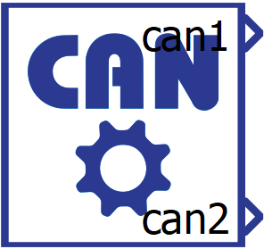
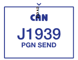
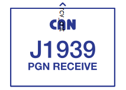
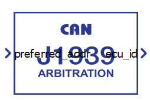
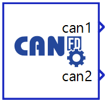
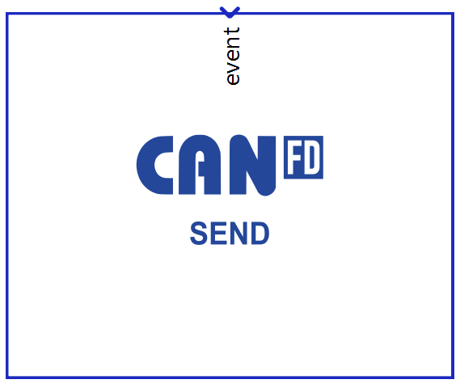
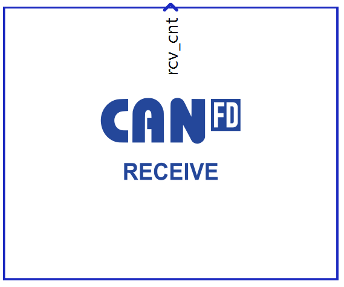

CAN bus Toolbox
Schematic Editor components available through the CAN bus Toolbox
Real-time only: This document is valid only for real-time/VHIL
simulation.
The CAN bus Toolbox is an additional toolbox that allows you to implement a CAN bus in your models. By simulating the communication layer of your high-fidelity model, you can minimize the risk of related issues during the deployment phase.
Table 1 lists the components available through unlocking the CAN bus Toolbox. for a detailed description of the full capabilities of the CAN bus toolbox.
For information about other toolboxes, please refer to the Schematic Editor Toolboxes documentation.
| Component Name | Image of Component(s) | Schematic Editor Library |
|---|---|---|
| CAN bus (Setup, Send, and Receive) |   |
Library Explorer: Communication/CAN/CAN Bus/ |
| CANOpen (Slave) | Library Explorer: Communication/CAN/CANOpen/ | |
| J1939 (Send, Receive and Arbitration) |    |
Library Explorer: Communication/CAN/J1939 |
| CAN FD (Setup, Send and Receive) |    |
Library Explorer: Communication/CAN/CAN FD/ |